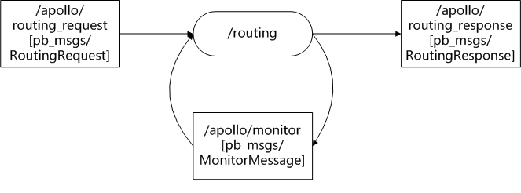

routing模块分析¶
功能：¶
基于请求，输出两点之间导航信息。
输入：¶
用户的起始和终止位置。/apollo/routing_request[pb_msgs/RoutingRequest]。
HD map。
/apollo/monitor[pb_msgs/MonitorMessage]。
输出：¶
请求的响应：/apollo/routing_response[pb_msgs/RoutingResponse],包含了最终的路由信息。
/apollo/monitor[pb_msgs/MonitorMessage]。
节点I/O：¶

routing源码：¶
routing.cc和routing.h¶
Name()函数：返回节点名字。
Routing()：构造函数，初始化monitor_。
Init()：节点初始化函数。
获取路由地图文件routing_map_file。
创建导航器navigator_ptr_。
读取导航配置文件：modules/routing/conf/routing.pb.txt到routing_conf_。
根据Adapter配置文件：modules/routing/conf/adapter.conf，创建nodehandle和响应topics。
设置路由请求话题的回调函数OnRouting_Request。这里为啥不直接使用rosservice？//TODO。
OnRouting_Request()：处理请求。
输入路由请求。
执行SearchRoute()函数，根据routing_request，寻找路由，并设置routing_response。
发布routing_response。